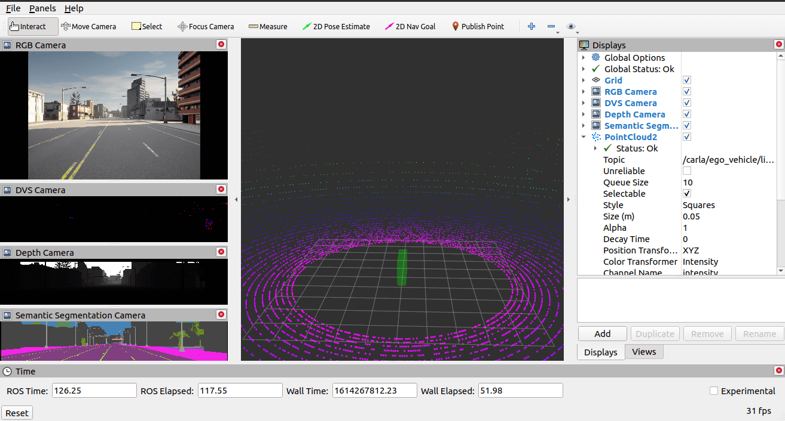

RVIZ Carla 插件¶
RVIZ 插件 提供了基于 RVIZ ROS包的可视化工具。
使用 RVIZ 运行 ROS 桥¶

RVIZ 插件需要一个名为 ego_vehicle 的自主车辆。要查看 ROS 桥与 RVIZ 配合使用的示例，请在运行的 Carla 服务器上执行以下命令：
1. 在启用 RVIZ 的情况下启动 ROS 桥：
# ROS 1
roslaunch carla_ros_bridge carla_ros_bridge.launch
# ROS 2
ros2 launch carla_ros_bridge carla_ros_bridge.launch.py
2. 启动 RVIZ：
# ROS 1
rosrun rviz rviz
# ROS 2
ros2 run rviz2 rviz2
2. 使用carla_spawn_objects包生成一辆自我车辆：
# ROS 1
roslaunch carla_spawn_objects carla_spawn_objects.launch
# ROS 2
ros2 launch carla_spawn_objects carla_spawn_objects.launch.py
3. 使用 carla_manual_control 包控制自我车辆（按下B可启用手动转向）：
# ROS 1
roslaunch carla_manual_control carla_manual_control.launch
# ROS 2
ros2 launch carla_manual_control carla_manual_control.launch.py
RVIZ 插件的功能¶
- 自我车辆状态可视化 - 可视化车辆位置和控制。
- 向其他节点提供 RVIZ 视图姿势 - 连接
actor.pseudo.control到相机后，通过发布姿势消息在 Carla 世界中移动相机。 - 传感器可视化 - 可视化 RGB、LIDAR、深度、DVS 和语义分割相机信息。
- 执行场景 - 使用 carla_ros_scenario_runner 包触发场景。
- 播放/暂停模拟 - 如果以同步模式启动，您可以播放和暂停模拟。
- 手动覆盖自我车辆控制 - 使用 RVIZ Visualization Tutorials 可视化教程中的驱动小部件和从扭曲转换为车辆控制的 节点 ，通过鼠标驾驶车辆。
ROS 应用程序接口¶
订阅¶
| Topic | Type | Description |
|---|---|---|
/carla/status |
carla_msgs/CarlaStatus | 读取 Carla 的当前状态 |
/carla/ego_vehicle/vehicle_status |
carla_msgs/CarlaEgoVehicleStatus | 显示本车当前状态 |
/carla/ego_vehicle/odometry |
nav_msgs/Odometry | 显示自我车辆的当前姿态 |
/scenario_runner/status |
carla_ros_scenario_runner_types/CarlaScenarioRunnerStatus | 可视化场景运行状态 |
/carla/available_scenarios |
carla_ros_scenario_runner_types/CarlaScenarioList | 提供要执行的场景列表（在组合框中禁用） |
发布¶
| Topic | Type | Description |
|---|---|---|
/carla/control |
carla_msgs/CarlaControl | 播放/暂停/步进 Carla |
/carla/ego_vehicle/spectator_pose |
geometry_msgs/PoseStamped | 发布 RVIZ 相机视图的当前姿态 |
/carla/ego_vehicle/vehicle_control_manual_override |
std_msgs/Bool | 启用/禁用车辆控制覆盖 |
/carla/ego_vehicle/twist |
geometry_msgs/Twist | 通过鼠标创建的扭曲命令 |
服务¶
| Topic | Type | Description |
|---|---|---|
/scenario_runner/execute_scenario |
carla_ros_scenario_runner_types/ExecuteScenario | 执行选定的场景 |